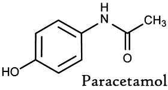

Indications:- Cold, Flu, Sore Throat, Headaches.

Aceclofenac + Paracetamol
SUSPENSION PRESENTATION:
Each 5 ml contains:
Aceclofenac IP 50 mg
Paracetamol IP 125 mg

Aceclofenac plus Paracetamol (Acetaminophen) Suspension:
Aceclofenac: Aceclofenac has been shown to have potent analgesic and ant inflammatory activities used to treat various painful inflammatory conditions. Aceclofenac has an outstanding anti-inflammatory profile mediated primarily through inhibition of cyclooxygenase (COX) activity and suppression of PGE2 synthesis.
Paracetamol: Paracetamol is a safe and effective analgesic-antipyretic agent with minimal effect on Cardiovascular , respiratory and GI system. Paracetamol is a widely used over-the-counter analgesic and antipyretic.
It has been demonstrated by recent studies of INTERNATIONAL JOURNAL OF PHARMACY & LIFE SCIENCES that administration of combination (aceclofenac + paracetamol suapension) possesses remarkable anti-inflammatory, Analgesic and antipyretic properties


The combination of Aceclofenac + paracetamol suspension is used also in the management of more severe pain (such as postoperative pain):
- Pain and Inflammation
- Injury
- Dental Pain
- Back Pain
- Arthritis
- Spondylitis
- Inflammatory conditions of ear, nose & throat.
Main features:
• For relief from severe pain and inflammation in Osteoarthritis, Rheumatoid
Arthritis, spondylitis.
• Low back pain, Dental pain, painful & inflammatory conditions of ear, nose & throat.

Pharmokinetics action of Aceclofenac plus paracetamol suspension
- Absorption:Aceclofenac: Rapidly absorbed; almost 100% bioavailability; peak plasma levels reached about 1.25-3 hours after oral admin.
-
Distribution:Aceclofenac:>99.7% bound to plasma proteins; distributes into synovial fluid.
Paracetamol: Distributes throughout most fluids of the body. - Metabolism: Aceclofenac:Probably metabolized by CYP2C9; average plasma elimination half-life: 4-4.3 hours. Paracetamol: Mainly metabolized hepatically; plasma elimination half-life: 1-4 hours.
- Excretion:Aceclofenac: About two-thirds of the administered dose is removed in the urine, mainly as conjugated hydroxymetabolites. Paracetamol: Most metabolites are removed in the urine within 24 hours.

BEFORE TAKING THIS FORMULATION TELL THE DOCTOR ABOUT ANY MEDICAL PROBLEMS AND ALLERGIES THAT A CHILD HAS OR HAD."
Aceclofenac may increase the plasma concentrations of lithium, digoxin and methotrexate. It may increase the activity of anticoagulants. Increased nephrotoxicity with diuretics. Co administration of Aceclofenac with other NSAIDs and corticosteroids are to be avoided due to increased incidence of side-effects.
Paracetamol: Reduced absorption of cholestyramine within 1 hour of administration. of lithium and digoxin.. Serum Accelerated absorption with metoclopramide Co administration of Paracetamol with rifampicin, isoniazid, chloramphenicol, anti-epileptic drugs and antiviral drugs is to be avoided. Cholestyramine also reduces the absorption of Paracetamol.

The most commonly reported adverse effects are:
- Nausea allergic reactions
- Skin rashes
- Headache
- Diarrhea

Paracetamol: Increased risk of liver damage in chronic alcoholics. Increased risk of toxicity with high doses or long term administration of carbamazepine, hydantoins, isoniazid, rifampin and sulfinpyrazone.

Store in a well closed container in cool, dry place, away from direct heat and light.

"This medication is not applicable since they are intended for use in children from 6months to 12 years of age."
"However, this information is relevant to the active Ingredients, aceclonfenac and paracetamol."
"Caution when driving or operating machinery."
"Response to medication may vary from one individual to another, contain side effects like (vertigo, dizzies nervousness, insomnia) that have been reported very rarely with the medicine may affect some patient's ability to drive, operate machinery."

In the nutshell this suspension has been shown to be safe . it is clear from this study that this combination is used both as analgesic and antipyretic. It produces analgesia by increasing pain threshold and antipyresis by acting on the hypothalamic heat-regulating centre. Moreover, it has a considerable safety profile, with persistent results.